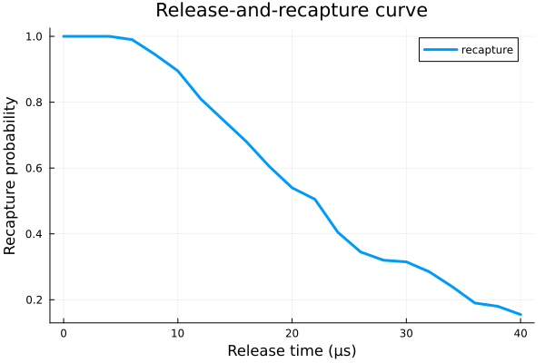

Examples
The current package API is built around dict-based laser descriptions and an error_options dictionary that turns physical effects on and off. The examples below use lightweight settings so they compile quickly in the documentation build while still reflecting the current code paths.
Release And Recapture
Release-and-recapture is the package's temperature-estimation entry point for a single atom in a Gaussian optical tweezer.
using NeutralAtoms
using Plots
using Random
Random.seed!(1234)
trap_params = [1000.0, 1.1, w0_to_z0(1.1, 0.852, 1.3)]
atom_params = [86.9091835, 35.0]
tspan = collect(0.0:2.0:40.0)
recapture, acc_rate = release_recapture(
tspan,
trap_params,
atom_params,
200;
harmonic = true,
)
plot(tspan, recapture; lw = 3, label = "recapture")
xlabel!("Release time (μs)")
ylabel!("Recapture probability")
title!("Release-and-recapture curve")
Single-Atom Two-Photon Rydberg Dynamics
The single-atom simulation path combines thermal motion, Doppler shifts, optional phase noise, and spontaneous decay in the style of arXiv:1802.10424.
using NeutralAtoms
using QuantumOptics
using Plots
using Random
Random.seed!(1234)
atom_params = [86.9091835, 20.0]
trap_params = [1000.0, 1.1, w0_to_z0(1.1, 0.813, 1.3)]
Ωr = 2π * 8.0
Ωb = 2π * 8.0
Δ0 = 2π * 250.0
first_laser_params = Dict(
"Ω" => Ωr,
"w0" => 10.0,
"z0" => w0_to_z0(10.0, 0.795),
"θ" => 0.0,
"n_sg" => 1,
"type" => "gauss",
)
second_laser_params = Dict(
"Ω" => Ωb,
"w0" => 3.5,
"z0" => w0_to_z0(3.5, 0.475),
"θ" => 0.0,
"n_sg" => 1,
"type" => "gauss",
)
f = collect(0.02:0.02:0.10)
phase_amplitudes = zeros(length(f))
detuning_params = [Δ0, -δ_twophoton(Ωr, Ωb, Δ0)]
decay_params = [2π * 0.2, 2π * 0.2, 0.0, 0.0]
error_options = Dict(
"laser_noise" => false,
"spontaneous_decay_intermediate" => true,
"spontaneous_decay_rydberg" => false,
"atom_motion" => true,
"free_motion" => true,
"xy_motion" => true,
"z_motion" => true,
"Doppler" => true,
)
tspan = collect(0.0:0.05:0.35)
cfg = RydbergConfig(
tspan,
ket_1,
atom_params,
trap_params,
2,
f,
phase_amplitudes,
phase_amplitudes,
first_laser_params,
second_laser_params,
[0.0, 0.0, 0.0],
detuning_params,
decay_params,
error_options,
)
ρ, ρ2 = simulation(cfg; reltol = 1e-6, abstol = 1e-8)
rydberg_probs = get_rydberg_probs(ρ, ρ2)
plot_rydberg_probs(tspan, rydberg_probs)
0.0%┣ ┫ 0/2 [00:00<00:00, -0s/it]
50.0%┣█████████████████████▌ ┫ 1/2 [00:07<Inf:Inf, InfGs/it]
100.0%┣███████████████████████████████████████████████┫ 2/2 [00:07<00:00, 7s/it]
100.0%┣███████████████████████████████████████████████┫ 2/2 [00:07<00:00, 7s/it]Two-Qubit Blockade Simulation
simulation_czlp extends the same ingredients to a two-atom blockade model in the spirit of arXiv:1908.06101.
using NeutralAtoms
using QuantumOptics
using Plots
using Random
Random.seed!(1234)
atom_params = [86.9091835, 10.0]
trap_params = [1000.0, 1.1, w0_to_z0(1.1, 0.813, 1.3)]
Ωr = 2π * 6.0
Ωb = 2π * 6.0
Δ0 = 2π * 200.0
first_laser_params = Dict(
"Ω" => Ωr,
"w0" => 10.0,
"z0" => w0_to_z0(10.0, 0.795),
"θ" => 0.0,
"n_sg" => 1,
"type" => "gauss",
)
second_laser_params = Dict(
"Ω" => Ωb,
"w0" => 3.5,
"z0" => w0_to_z0(3.5, 0.475),
"θ" => 0.0,
"n_sg" => 1,
"type" => "gauss",
)
f = collect(0.02:0.02:0.10)
phase_amplitudes = zeros(length(f))
detuning_params = [Δ0, -δ_twophoton(Ωr, Ωb, Δ0)]
decay_params = [2π * 0.1, 2π * 0.1, 0.0, 0.0]
error_options = Dict(
"laser_noise" => false,
"spontaneous_decay_intermediate" => true,
"spontaneous_decay_rydberg" => false,
"atom_motion" => true,
"free_motion" => true,
"xy_motion" => true,
"z_motion" => true,
"Doppler" => true,
)
ket_plus = (ket_0 + ket_1) / sqrt(2)
tspan = [0.0, 0.05]
cfg = CZLPConfig(
tspan,
ket_plus ⊗ ket_plus,
atom_params,
trap_params,
1,
f,
phase_amplitudes,
phase_amplitudes,
first_laser_params,
second_laser_params,
detuning_params,
decay_params,
error_options,
[[-2.0, 0.0, 0.0], [2.0, 0.0, 0.0]],
2π * 500.0 * 4.0^6,
1.0,
1.0,
π / 2,
0.0,
)
ρ, ρ2 = simulation_czlp(cfg; reltol = 1e-6, abstol = 1e-8)
two_qubit_probs = get_two_qubit_probs(ρ, ρ2)
plot_two_qubit_probs(tspan, two_qubit_probs)
0.0%┣ ┫ 0/1 [00:00<00:00, -0s/it]
100.0%┣██████████████████████████████████████████┫ 1/1 [00:03<Inf:Inf, InfGs/it]
100.0%┣██████████████████████████████████████████┫ 1/1 [00:03<Inf:Inf, InfGs/it]For phase-gate calibration and fidelity analysis, the main helpers are get_fidelity_with_rz_phi, CZ_calibration_by_fidelity_oscillation, get_parity_osc, and get_cz_infidelity.